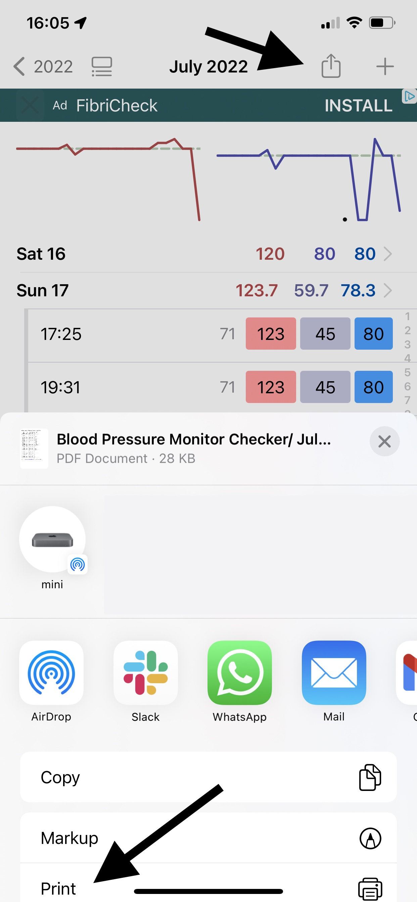

Yes. You can record as many times as you like per day. Just press on a day again to do this.
Double-tap the Journal icon in the tab bar at the bottom of your screen.
Your data is encrypted when stored on your device. This means even if your device is stolen, no one can access it.
On your device, and on iCloud. This app uses the same technology as Apple Notes and Photos to save and sync your data across devices, meaning it's very reliable and secure.
No. The data only ever lives on your device and on iCloud, which runs on servers managed by Apple.
iCloud enables your data to be backed up, and synced between your devices. Then if you lose your phone or get a new one, your data can be restored from iCloud.
Backups are made automatically every week by default (although you can turn this off in Settings). You can also create manual backups in Settings > Data.
There’s no limit to number of backups made. Backups can go back years, and generally take very little space, so deleting them won't make much difference to your device's storage. If you need to free up space, it's better to delete heavier files on your device such as photos and videos.
Currently backups aren’t synced on iCloud, but your current data is. That means if you get a new iPhone or iPad, your current data will appear there too, but not your backups, as each device keeps its own local backups.
This means that, for example if you delete a record on your iPhone and it’s gone from iCloud and your phone, you could still go back to your iPad and restore from one of its older backup snapshots.
No. You can use it straight away without needing to login in or sign up. The app uses your iCloud account to automatically sync your data to any other devices, using Apple's infrastructure. This means it's fast, reliable and secure.
Yes, and your data is automatically synced between them if logged into the same iCloud account. On the iPad version you have more space for notes, and can see more items.
Yes. It is available for Apple Silicon Macs (M1 onwards). In the Mac app, you can resize the window to see more data on larger screens. Search for this app under iPhone and iPad apps in the App Store on your Mac.
We'd love to hear your feedback. If you're seeing this in the app, email us at support@feeltracker.com.
Yes. Go to the Settings tab and turn off the slider next to Enable Sound Effects.
Yes. In Journal, press the button with the box and arrow in the top right (the Share button). You can email yourself, or someone else, your data in CSV (Excel) or PDF report formats.
Trends lets you identify what's on your mind, why, and the effect it's having on you. Scroll down for more detail and some examples on how Trends works in your app.
For Trends to work, you need to take notes when you save records. You can do this on any record in the Notes field.
This currently shows you all records between 2 dates, and an average/total in between that range. This enables you to get an average/total for any period.
Journal is the main diary/log section which lets you input data and view it on a monthly/yearly/lifetime basis, with averages and totals
Trends lets you identify patterns in the data you're recording in Journal so you can act on them.
Stats lets you see your data in chronological order (newest item first) without monthly or yearly grouping, and let's you see averages and totals between any two dates.

We want you to first try the app and see if you find useful, without any distractions. After you save 10 records, you may see a slim unintrusive ad banner, which helps support the app and keep it free.
Yes! To do this, press the ❎ button on the banner. This will bring up the option to subscribe, for a nominal fee. While you are subscribed you will not see any ads.
A small regular subscription fee makes the app easier to try without large upfront cost. Long-term, subscription revenue helps us maintain the app and funds the development of useful new features.
We're reliant on good reviews to grow the app and keep building new features. Please leave a review by following the link for your app:
Your blood pressure should normally be between 90-140 for systolic value, and 60-90 for diastolic value. If it's outside this range, you should speak to a doctor.
According to the NHS, ideal blood pressure is between 90/60 mmHg and 120/80 mmHg. However, that can vary depending on sex, age, and other variables. Therefore it is best to consult your local doctor for an accurate assessment of your blood pressure based on your own individual circumstances.
With Trends, this app takes your data and notes, and shows what things affect you and how. For example, you could see that you meditated 20 times last year, and that meditation lowers your blood pressure. Conversely, you could see that every time you meet Bob, you argue, and he raises your blood pressure. The more you use notes, the more useful Trends can be.
For example, you go running 10 times. 5 times, your blood pressure goes down by 10, and the other times it goes down by 5. Trends will show that on average, running helps reduce your blood pressure by about 7.5 points.
With Trends, this app takes your data and notes, and shows what things affect you and how. For example, you could see that you met Jane 20 times last year, and that on average, Jane makes you very happy. Conversely, you could see that every time you meet Bob, you argue, and he makes you unhappy. The more you use notes, the more useful Trends can be.
For example, you meet Jane 10 times. 5 times she made you very happy (+2), and 5 times she made you fairly happy (+1). Trends will show that on average Jane makes you quite (+1.5) happy.
With Trends, this app takes your data and notes, and shows what words are most on your mind. For example, you could see that you used a word 20 times last year. Conversely, you could see that you used another word 50 times - a lot more often. The more you use notes, the more useful Trends can be.
For example, you write about Jane 120 times in your notes, more than about your job, which you write about 50 times. Trends in this case shows that clearly the top thing on your mind was Jane.
With Trends, this app takes your data and notes, and shows what things affect you and how. For example, you could see that you drank a lot of coffee last week, and that because of this you had less sleep. Conversely, you could see that every time you eat salad or go to the gym, you lose sleep better. The more you use notes, the more useful Trends can be.
For example, you drink coffee 10 times. 5 of those times, you underslept 2 hours, and the other 5 times you underslept 1 hour. Trends will show that on average, drinking coffee causes you to undersleep by 1.5 hours.
With Trends, this app takes your data and notes, and shows what things affect you and how. For example, you could see that you ate fast food 20 times last year, and that over time, you gain weight when you eat fast food. Conversely, you could see that every time you eat salad or go to the gym, you lose weight. The more you use notes, the more useful Trends can be.
For example, you eat donuts 10 times. 5 times, your weight goes up by 0.1kg. The other 5 times your weight goes up by 0.3kg. Trends will show that on average, eating donuts makes your weight go up by 0.2kg.
If you have any questions or suggestions, do not hesitate to contact us at support@feeltracker.com.